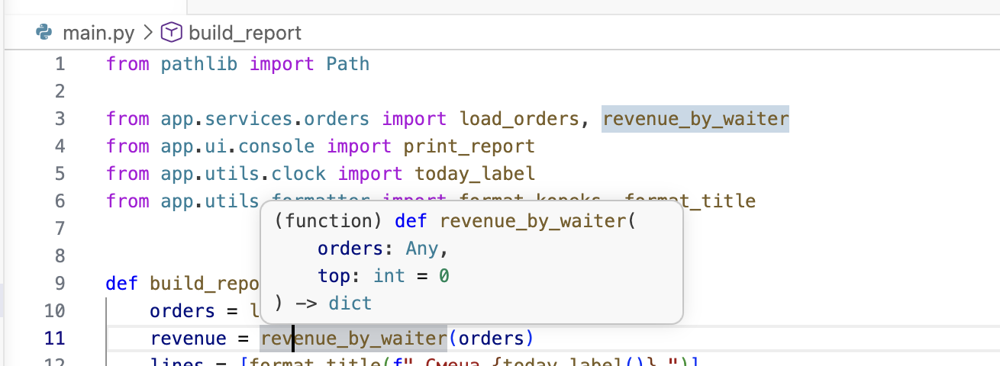
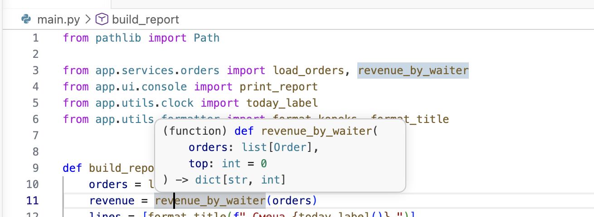
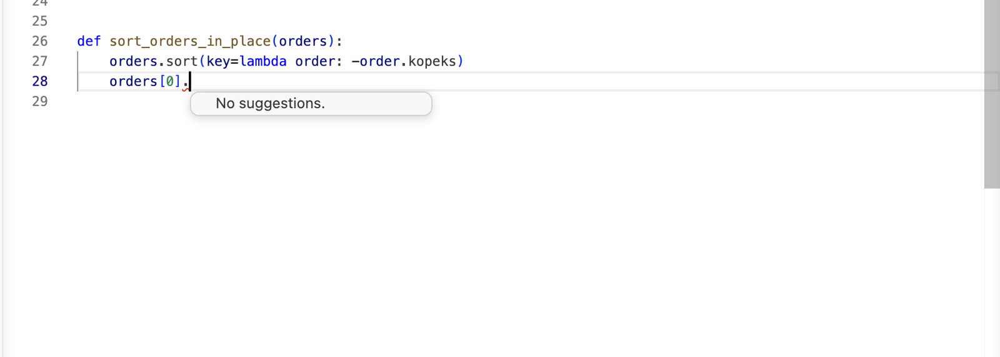
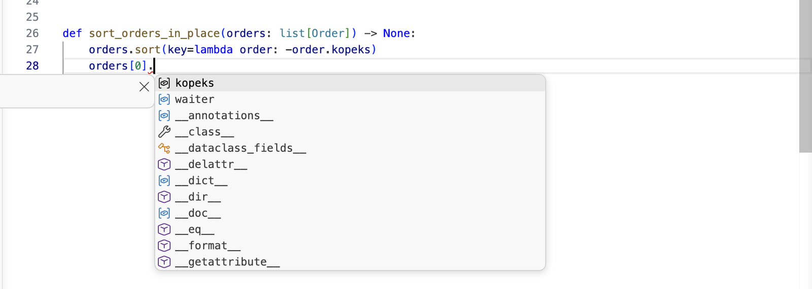

Аннотации типов и документация кода · МДК.01.01 · разработка программных модулей
Глава 4.1
Аннотация типа:
что это и что она делает
В этой главе разобрано, что такое аннотация типа и как она записывается у параметра, у результата и у переменной. На функциях учебного проекта показано, как читать подпись с аннотациями, что Python делает с аннотацией при запуске программы и что меняется в редакторе, когда аннотации в коде есть.
- Категория
- Понятия
- Уровень
- Начальный
- Опирается на
- Модули и пакеты, тема 02
- Зачем это знать
- Понимать, какие значения принимает функция, не открывая её тело
§1Тип значения
Тип — вид значения, от которого зависит, что с ним можно делать. У числа 5 тип int: его можно складывать и делить. У строки "5" тип str: её можно разрезать и склеить с другой строкой, а сложить с числом нельзя. Узнать тип любого значения можно функцией type: type(5) вернёт <class 'int'>, type("5") — <class 'str'>.
Python определяет тип значения во время работы программы, в момент, когда значение уже получено. Такой подход называют динамической типизацией. Объявлять заранее, какие значения принимает функция, не требуется: в def calculate_average(grades) можно передать список чисел, список строк или одно число. Если значение не подходит, ошибка возникнет только при выполнении той строки, которая с ним не справится.
Пока функция и её вызов лежат в одном файле, это не мешает: тело функции видно рядом. Когда функций десятки и они разнесены по пакетам, как в проекте из темы 02, при каждом вызове приходится открывать чужой модуль и выяснять одно и то же: что передавать и что вернётся. Аннотации типов записывают ответ на этот вопрос прямо в первой строке функции.
§2Проект темы
Все примеры в теме взяты из одного проекта — «Отчёт кафе». Он читает файл смены с заказами, считает выручку по каждому официанту и печатает отчёт в консоль. Десять модулей разложены по пакетам: domain — заказ и смена, services — чтение файла и расчёты, utils — имена, суммы и дата, ui — печать. Суммы в проекте хранятся в копейках, целыми числами: 125000 означает 1 250,00 ₽.
Проект выдаётся в трёх архивах, по одному на каждый этап темы. Каждый следующий получается из предыдущего: сначала в код добавляют аннотации, потом описания.
Скачайте первые два архива и подготовьте каждый к работе одинаково:
- Распакуйте архив и откройте получившуюся папку в VS Code: File → Open Folder.
- Откройте терминал редактора (Ctrl + `) и создайте окружение:
python3 -m venv .venv. В Windows команда —python -m venv .venv. - Установите зависимости:
.venv/bin/pip install -r requirements.txt, в Windows —.venv\Scripts\pip install -r requirements.txt. Вместе с pytest поставятся Ruff и mypy. - Запустите проект:
.venv/bin/python main.py, в Windows —.venv\Scripts\python main.py. В терминале появится отчёт по смене.
$ .venv/bin/python main.py =========== Смена 21.09.2026 =========== Петрова Анна 2 480,50 ₽ Иванов Пётр 1 685,00 ₽ Сидоров Илья 772,00 ₽ =========== Итого 4 937,50 ₽ ===========
Оба архива печатают одинаковый отчёт. В первом аннотаций нет, и программа всё равно работает: для запуска аннотации не нужны. Дата в шапке — текущая: проект берёт её из часов компьютера.
§3Как записывается аннотация
Аннотация типа — запись в коде, которая указывает, значения какого типа ожидаются в параметре, в переменной или в результате функции. У параметра она пишется после имени через двоеточие, у результата — после закрывающей скобки через стрелку ->, у переменной — между именем и знаком равенства.
Одна и та же функция из файла app/services/calculator.py в первом и во втором архиве:
def calculate_average(grades):
Из подписи видно только имя параметра. Список это, кортеж или одно число, можно узнать, только прочитав тело.
def calculate_average(grades: list[int]) -> float:
Параметр — список целых чисел, результат — дробное число. Тело для этого читать не нужно.
Все три места, где пишется аннотация, показаны на схеме. Для примера взята функция format_title из app/utils/formatter.py: у неё есть обычный параметр, параметр со значением по умолчанию и результат.
->. У переменной — между именем и знаком равенства. Пример переменной взят из функции revenue_by_waiter.| Где | Запись | Читается как |
|---|---|---|
| Параметр | text: str | параметр text принимает строку |
| Параметр с умолчанием | width: int = 40 | целое число; если его не передать, будет 40 |
| Результат | -> str | функция возвращает строку |
| Функция без результата | -> None | функция ничего не возвращает |
| Переменная | totals: dict[str, int] = {} | словарь «строка — целое число», сейчас пустой |
| Атрибут объекта | self.orders: list[Order] = [] | список заказов, сейчас пустой |
Три правила оформления, которые соблюдаются во всём проекте. После двоеточия ставят один пробел, перед ним — ни одного: text: str. Вокруг стрелки — по пробелу: ) -> str:. У параметра со значением по умолчанию вокруг знака равенства ставят пробелы, если есть аннотация (width: int = 40), и не ставят, если её нет (width=40).
Запись list[int] означает «список, в котором лежат целые числа», dict[str, int] — «словарь со строковыми ключами и целыми значениями». В квадратных скобках после имени коллекции указывают, что в ней хранится. Все такие записи разобраны в главе 4.2, примеры с проверкой mypy — в главе 4.4.
§4Как читать подпись функции
Подпись функции — первая строка её объявления: имя, параметры и результат. С аннотациями подпись отвечает на три вопроса: какие значения передать, в каком порядке и что вернётся. Ниже — функции второго архива, которые вызываются из других модулей. Подпись читают слева направо: сначала имя, затем каждый параметр с его типом, в конце тип после стрелки.
| Подпись | Что передают | Что получают |
|---|---|---|
def today_label() -> str | ничего | строку с датой, например "21.09.2026" |
def normalize_name(name: str) -> str | строку с именем | строку: имя в виде «Фамилия Имя» |
def format_kopeks(kopeks: int) -> str | целое число копеек | строку "1 250,00 ₽" |
def format_title(text: str, width: int = 40) -> str | строку и, по желанию, ширину | строку ровно заданной ширины |
def calculate_average(grades: list[int]) -> float | список целых чисел | дробное число |
def grade_bounds(grades: list[int]) -> tuple[int, int] | список целых чисел | пару целых: минимум и максимум |
def load_orders(path: Path) -> list[Order] | путь к файлу — объект Path | список заказов |
def revenue_by_waiter(orders: list[Order], top: int = 0) -> dict[str, int] | список заказов и, по желанию, число | словарь «имя — сумма» |
def sort_orders_in_place(orders: list[Order]) -> None | список заказов | ничего: функция меняет переданный список |
def save_report(path: Path, lines: list[str]) -> int | путь и список строк | целое число — сколько строк записано |
def print_report(lines: list[str]) -> None | список строк | ничего: функция только печатает |
По таблице можно составить вызов, не открывая ни одного модуля. Например, load_orders принимает Path и возвращает list[Order], а revenue_by_waiter принимает list[Order]. Значит, результат первой функции подходит второй без преобразований — так они и вызываются в main.py:
def build_report(path: Path) -> list[str]: orders = load_orders(path) # list[Order] revenue = revenue_by_waiter(orders) # dict[str, int] ...
Отдельно о методах классов. Первый параметр метода, self, аннотации не получает: это сам объект, и его тип известен из класса. Метод __init__ всегда возвращает None, поэтому его подпись в проекте — def __init__(self, day: date) -> None.
class Shift: def __init__(self, day: date) -> None: self.day = day self.orders: list[Order] = [] def add(self, order: Order) -> None: self.orders.append(order) def total_kopeks(self) -> int: return sum(order.kopeks for order in self.orders)
Здесь видны все три места аннотаций сразу. day: date — параметр: в смену передают дату, объект date из модуля datetime. self.orders: list[Order] = [] — атрибут объекта: пустой список, в который потом попадут заказы; без аннотации по пустым скобкам нельзя понять, что в нём будет. -> int у total_kopeks — результат: сумма копеек целым числом. -> None у add означает, что метод меняет объект и ничего не возвращает.
§5Что Python делает с аннотацией
При запуске программы Python аннотации сохраняет, но не проверяет. Хранятся они в атрибуте __annotations__ функции — это обычный словарь, где ключи — имена параметров, а ключ 'return' — результат:
>>> from app.services.calculator import calculate_average >>> calculate_average.__annotations__ {'grades': list[int], 'return': <class 'float'>}
Сверять с этим словарём переданные значения Python не станет. Ниже одна и та же функция calculate_average(grades: list[int]) -> float вызвана с разными аргументами, а в последней вкладке — короткая функция сложения сумм. Все выводы получены запуском.
Аннотация при запускепереключите вызов
>>> calculate_average([5, 4, 5, 3, 5]) 4.4
РаботаетПередан список целых чисел, как и записано в аннотации. Функция вернула среднее.
>>> calculate_average([5.5, 4.0]) 4.75
РаботаетАннотация требует целые числа, переданы дробные. Python вызов не остановил: сложение и деление для дробных чисел определены, и функция вернула результат.
>>> calculate_average(['5', '4']) File "app/services/calculator.py", line 4, in calculate_average return round(sum(grades) / len(grades), 2) ^^^^^^^^^^^ TypeError: unsupported operand type(s) for +: 'int' and 'str'
Ошибка внутри функцииВызов начал выполняться, и ошибка возникла в строке с sum: сложить число со строкой нельзя. Сообщение говорит о сложении числа со строкой. О неверном аргументе в нём ничего нет, и строка вызывающего кода, где передано не то, из него не видна.
def add_kopeks(a: int, b: int) -> int: return a + b print(add_kopeks(150, 200)) print(add_kopeks("150", "200"))
350 150200
Неверный результат без ошибкиДля строк оператор + означает склейку, поэтому вместо суммы 350 получилась строка "150200". Программа продолжит работу с неверным значением. Такой случай реален: числа из CSV-файла читаются строками, и в load_orders сумму переводят в число вызовом int(row["kopeks"]).
Из четырёх вызовов следует, что аннотация описывает ожидание, но при запуске его не обеспечивает. Неверный тип либо проходит незамеченным, либо приводит к ошибке внутри функции, далеко от места вызова. Сверку вызовов с аннотациями до запуска выполняют отдельные программы — Pylance в редакторе и mypy в терминале. Работе с ними посвящена глава 4.3.
Ассоциация: разметка на парковке
Линии на асфальте показывают, где место для легковой машины, а где для грузовика. Сами по себе они не мешают грузовику встать на легковое место. Нарушение замечает человек, который обходит парковку и сверяет машины с разметкой.
Аннотация — разметка: она показывает, какое значение ожидается. При запуске Python её не проверяет. Сверку выполняет программа проверки типов, по тексту кода.
Где не совпадаетНа парковке нарушение видно, когда машина уже стоит. Программа проверки находит неверный вызов в тексте, до того как программа запущена.
§6Подсказка редактора
Первое место, где аннотация работает без всяких настроек, — подсказка VS Code. Если навести указатель на имя функции или поставить на него курсор и нажать Ctrl + K, затем Ctrl + I (на macOS — Cmd вместо Ctrl), редактор покажет подпись функции. Ниже один и тот же вызов revenue_by_waiter в строке 11 файла main.py: сначала в первом архиве, затем во втором.

top выведен из значения по умолчанию: top: int = 0. Для orders выводить не из чего, и в подсказке стоит Any — «любой тип». Результат — dict без указания содержимого: что лежит в словаре, неизвестно.
orders: list[Order], результат dict[str, int]. Из места вызова видно, что передать и что вернётся.§7Автодополнение
Автодополнение — список, который редактор показывает при наборе: имена переменных, функций, атрибутов и методов, подходящих в этом месте. После точки в нём перечислены атрибуты значения слева от точки. Составить такой список редактор может, только если знает тип значения. Ниже в тело функции sort_orders_in_place из app/services/orders.py дописано orders[0]. — первый элемент списка заказов и точка — и вызвано автодополнение: Ctrl + Пробел. На macOS это сочетание часто занято переключением раскладки; тогда список вызывают командой Trigger Suggest из палитры команд (Cmd + Shift + P). Обычно список появляется и сам, сразу после точки.

def sort_orders_in_place(orders):. Тип orders неизвестен, значит, неизвестен и тип его элемента. Редактор отвечает No suggestions — «предложений нет». Имя атрибута придётся набирать по памяти, и опечатка вроде order.kopek обнаружится только при запуске.
def sort_orders_in_place(orders: list[Order]) -> None:. Элемент списка — Order, и первыми в списке стоят его поля kopeks и waiter. Справа — тип выбранного поля: kopeks: int. Ниже идут служебные атрибуты, которые есть у любого объекта, — их имена начинаются и заканчиваются двумя подчёркиваниями.Что аннотации дают при работе с кодом
- Вызов без чтения тела функции. Подсказка показывает, какие значения передавать и что вернётся.
- Имена атрибутов из списка. Автодополнение предлагает поля объекта, и
order.kopeksвыбирается из списка; набирать имя по памяти не нужно. - Проверка до запуска. Программы проверки типов сверяют каждый вызов с аннотациями и показывают строку, где передано не то.
§8Частые вопросы
add_kopeks("150", "200") выполняется и возвращает "150200", вызов со строками в calculate_average завершается ошибкой внутри функции. Несовпадения находит программа проверки типов.int(...), как в функции load_orders при чтении файла: kopeks=int(row["kopeks"]).orders не видно, список это или словарь и что в нём лежит. Редактор и программа проверки тип по имени не определяют: в первом архиве у orders тип Any, и автодополнение ничего не предлагает.§9Проверьте себя
Где пишется аннотация у параметра, у результата и у переменной?
У параметра — после имени через двоеточие: text: str. У результата — после закрывающей скобки через стрелку: -> str. У переменной — между именем и знаком равенства: totals: dict[str, int] = {}.
Прочитайте подпись: def is_big(kopeks: int, limit: int = 100_000) -> bool.
Функция принимает целое число копеек и, по желанию, порог — тоже целое число, по умолчанию 100_000. Возвращает True или False. Подчёркивание внутри числа 100_000 Python пропускает, оно только разделяет разряды.
Прочитайте подпись: def save_report(path: Path, lines: list[str]) -> int.
Функция принимает путь — объект Path — и список строк. Возвращает целое число. Что это за число — количество записанных строк, — из подписи не видно: такие сведения пишут в описании функции.
Что вернёт calculate_average([5.5, 4.0]), если в аннотации записано list[int]?
4.75. Python при запуске аннотации не проверяет, а для дробных чисел сложение и деление определены.
Почему у self в методах класса нет аннотации?
self — сам объект, и его тип известен из класса, в котором записан метод. Редактор и программа проверки выводят его сами.
Почему в первом архиве после orders[0]. редактор ничего не предлагает?
У параметра orders нет аннотации, и тип его элементов неизвестен. Перечень атрибутов редактор берёт из типа значения, а типа нет.
§10Шпаргалка по главе
text: str
width: int = 40
-> str
-> None — ничего не возвращает
totals: dict[str, int] = {}
self.orders: list[Order] = []
def add(self, order: Order) -> None
self — без аннотации
хранятся в __annotations__
не проверяются
подсказка: Ctrl+K, Ctrl+I
автодополнение: Ctrl+Пробел
Итог главы
Аннотация типа записывает в подпись функции, какие значения она принимает и что возвращает. По подписям с аннотациями можно составить вызов, не открывая модуль. При запуске Python аннотации не проверяет: неверный тип проходит незамеченным или приводит к ошибке внутри функции. Редактор использует аннотации в подсказке и в автодополнении, а сверку вызовов до запуска выполняют программы проверки типов из главы 4.3.
- Синтаксис аннотаций функций — PEP 3107, переменных — PEP 526, оформление — PEP 8, Function Annotations.
- Назначение аннотаций и то, что интерпретатор их не проверяет, — PEP 484, Type Hints.
- Атрибут
__annotations__— документация Python, Annotations Best Practices. - Выводы в терминале получены запуском архивов проекта темы на Python
3.12; кадры сняты в VS Code1.138с расширением Pylance2026.4.